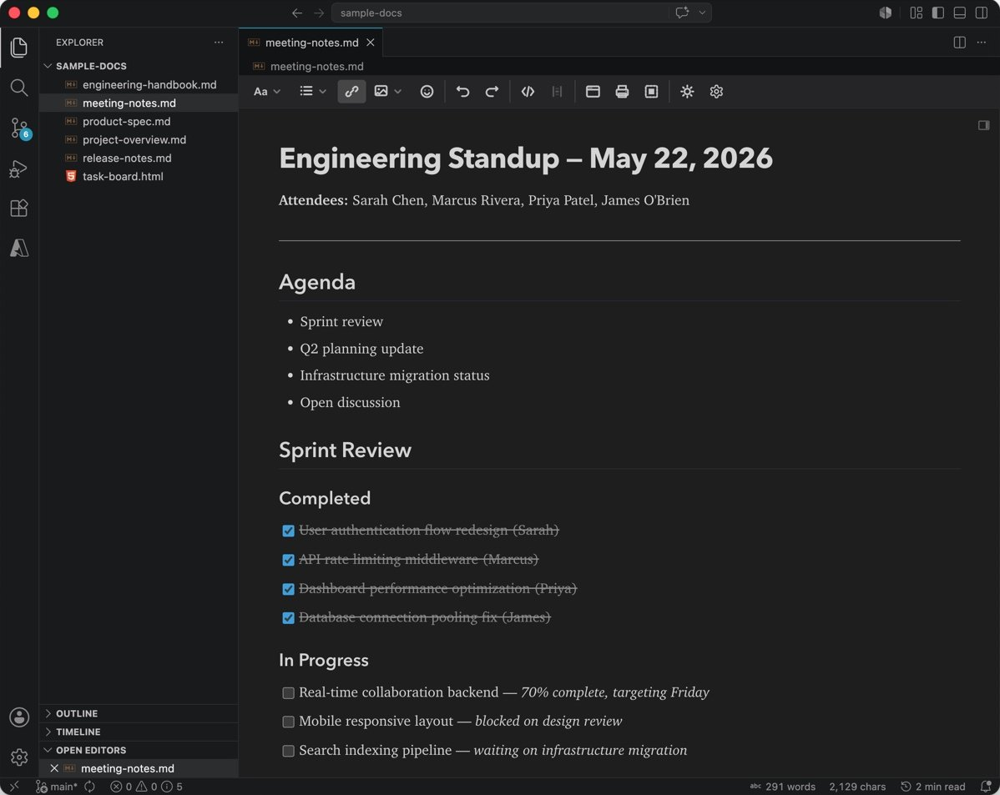
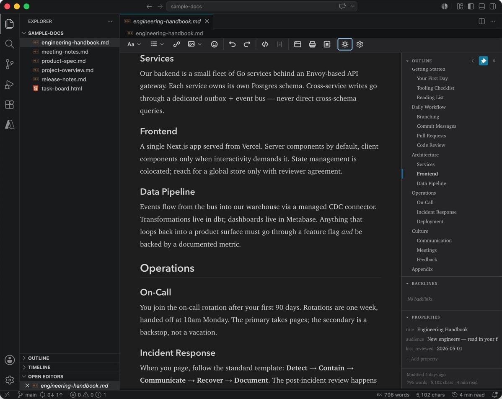
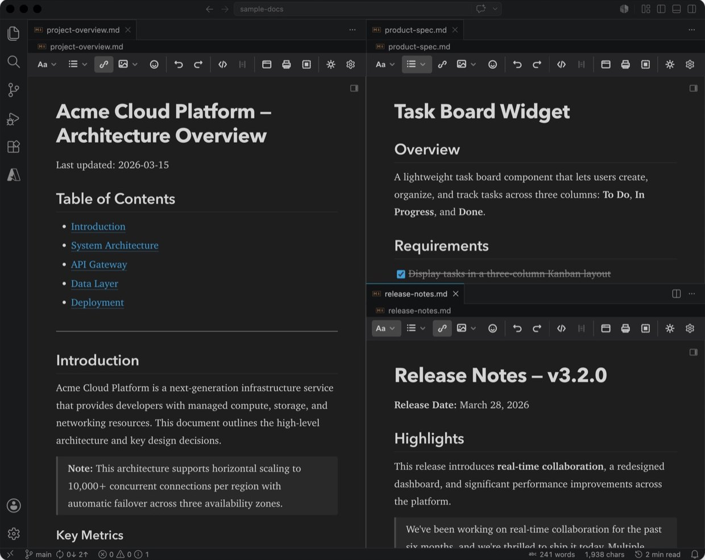
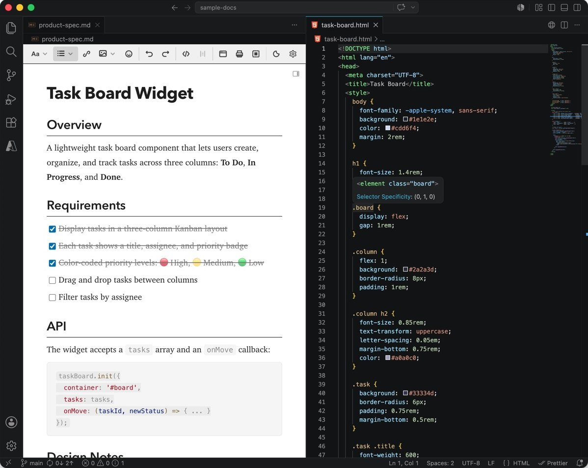
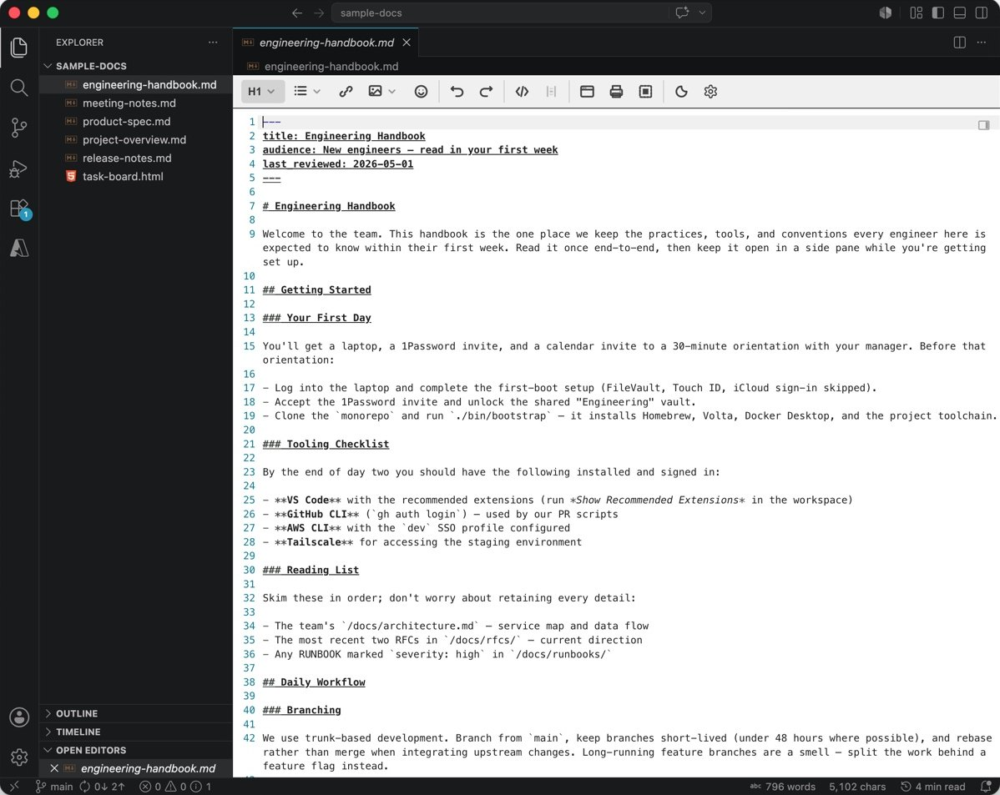

MikeDown for VS Code
A WYSIWYG markdown editor that opens in your editor tabs. You edit the formatted document; the file stays plain markdown, next to your code and your Git history.
Or paste this into Quick Open (Ctrl+P, or Cmd+P on a Mac):
ext install interapp.mikedown-editor

Why a WYSIWYG editor inside VS Code
The usual markdown workflow in VS Code is a split pane: source on one side, preview on the other, and your eyes moving between them. Standalone markdown apps fix the editing, but they take you away from Git, your other files and the extensions you rely on.
MikeDown puts the editing in the tab itself. Headings look like headings, tables look like tables, and Cmd+/ (Ctrl+/ on Windows and Linux) shows the raw markdown whenever you want it. Saving writes ordinary markdown back to the same file, in the style you wrote it.
A sidebar for every document
Open it from the corner of any MikeDown tab, or with Cmd+\ (Ctrl+\). Pin it, or let it hide when the editor is too narrow.
- Outline of every heading. The current section follows your cursor; click one to jump there.
- Backlinks: every file in the workspace that links here.
- Properties from the YAML frontmatter, editable in place.
- Tags across the workspace, with how many documents carry each.
- Modified time, word count and reading time at the bottom.

What you can do in it
Everything below works in the formatted view. None of it needs a split pane.
Writing
-
Slash commands
Type
/at the start of a line to insert a heading, list, table, callout, code block, image, footnote, formula or today's date. -
Smart paste
Paste from Google Docs, Word, Slack or a web page and get clean markdown. Paste a URL over selected text to link it.
-
Images
Paste a screenshot or drop a file. MikeDown saves it next to the document and inserts the link; right-click to resize it.
-
Tables
Insert one from a grid picker, drag rows and columns to reorder them, and select across cells.
-
Math
Inline
$E = mc^2$and display$$ … $$LaTeX render with KaTeX, the syntax GitHub uses. Click a formula to edit it. -
Callouts, highlights and emoji
GitHub
[!NOTE]callouts,==highlighted==text, and:shortcode:emoji with autocomplete. -
Code and diagrams
Syntax highlighting for 192 languages, a copy button on every block, and mermaid diagrams drawn in place.
-
Spell check
US or UK English, checked offline, with your own word list. Code and links are left alone.
-
AI (optional, off by default, experimental)
Off until you turn on AI features and pick an engine. Rewrite the selection shorter, longer, simpler, more formal or at a reading level, translate it or the whole document, explain it, summarize with
/summary, or get titles with/title. Each AI edit is one undo step.Local first: oMLX, LM Studio, Ollama, llama.cpp, vLLM or any OpenAI-compatible server. Cloud engines (Anthropic, OpenAI, OpenRouter, Gemini, Groq, Mistral, DeepSeek) need your key, a global switch and a yes for each workspace, and the prompt shows what would be sent. Keys stay in VS Code's secret storage, never in your settings or your repo.
Finding your way
-
Links that know your workspace
Start a link and pick from matching files and headings. Cmd-click or Ctrl-click follows it.
-
Broken link detection
Links to missing files or headings get a red wavy underline before anyone else finds them.
-
Tags
Inline
#tags, nested like#project/active, and frontmatter tags are indexed across the workspace, with autocomplete as you type. -
Find and replace
Search and replace inside the formatted view, without switching to source.
-
Footnotes
[^1]references show as superscripts. Click one to jump to its note. -
Heading numbering
Optional section numbers (1, 1.1, 1.1.1) that stay in order as you move sections. They are plain text, so GitHub shows them too.
Making it yours
-
Source mode
Cmd+/ or Ctrl+/ flips between the formatted view and the raw markdown.
-
Zoom
Change the text size with Ctrl and the scroll wheel (Cmd on a Mac), a trackpad pinch, or the zoom control in the toolbar.
-
Your own toolbar
Drag buttons, separators and spacers into the order you like, or do it from the keyboard. Settings Sync carries the layout to your other machines.
-
Light or dark, just for MikeDown
Give your writing a light page while VS Code stays dark, or the other way round.
-
Font themes
Ten heading and body font pairings, serif, sans-serif or mixed, previewed live.
-
Your markdown, as you wrote it
Saving keeps your markers, line breaks and final newline. Turn on normalization if you want one style everywhere.
-
Export
Save as HTML, print or save a PDF, or copy as rich text for an email or a chat.
Right next to your code
MikeDown tabs split, move between editor groups and windows, and sit beside any other file, like any VS Code editor.



Get started
-
Install it
From the Marketplace, or search for “MikeDown” in the Extensions view.
-
Open a markdown file
Right-click a
.mdfile or its tab and choose Open with MikeDown. -
Make it the default
Accept the one-click prompt, or run MikeDown: Make MikeDown the Default Markdown Editor from the Command Palette.
-
Write
Changes save to the same file. Press Cmd+/ (Ctrl+/) to see the source.
Open source
MikeDown is MIT licensed and built in the open. Found a bug or have an idea? Open an issue on GitHub; replies are usually quick. If MikeDown has earned a place in your workflow, a review on the Marketplace helps other people find it.
Also as a desktop app
MikeDown Desktop is the same editor as a free app for macOS and Windows, with a Linux preview. Open a folder of notes with a file tree, tabs, split panes and version history.
For developers
The editor is on npm as a web component and as React, Vue and Angular packages.
Build it into your app